Chapter 9 Analysis by Concept
Bar charts and tables to examine how contributions to conferences vary by methods
#spec(cpdata)
conceptdata <- cpdata %>%
select_if(is.numeric) %>%
gather(key = Concept, value = count, `PPS of landscapes`:`Accuracy and uncertainty`) %>%
filter(count > 0) %>%
group_by(`Concept`) %>%
summarise_all(sum, na.rm=T) 9.1 Total Conference Contributions
General observations:
- Connectivity & fragmentation, LUCC and spatial analysis & modelling most frequent (composing > 50%)
#ggplot(authCounts, aes(x=Concept, y=count)) + geom_bar(stat="identity")
conceptdata %>%
select(Concept, count) %>%
mutate(prop = count/sum(count)) %>%
mutate(prop = round(prop,3)) %>%
kable() %>%
kable_styling() %>%
scroll_box(width = "100%")| Concept | count | prop |
|---|---|---|
| Accuracy and uncertainty | 6 | 0.005 |
| Climate change interactions | 45 | 0.040 |
| Connectivity and fragmentation | 205 | 0.184 |
| Ecosystem services | 108 | 0.097 |
| History and legacy | 89 | 0.080 |
| Landscape sustainability | 98 | 0.088 |
| LUCC | 224 | 0.201 |
| PPS of landscapes | 105 | 0.094 |
| Scale and scaling | 54 | 0.049 |
| Spatial analysis and modeling | 179 | 0.161 |
ggplot(conceptdata, aes(x=Concept, y=count)) +
geom_bar(stat="identity") +
geom_text(aes(x=Concept, y=max(count), label = paste0(round(100*count / sum(count),1), "%"), vjust=-0.25)) +
theme(axis.text.x = element_text(angle = 45, hjust = 1))
9.3 Landscape Type
9.3.1 Using all landscape types
General observations:
- Ecosystem services have greatest proportion of urban landscapes and lowest in lowland rural
- Connectivity & Fragmentation have greatest proportion of studies in Lowland rural landscapes
lspCounts <- conceptdata %>%
select(Concept,`Upland rural`, `Lowland rural`, Urban, Riverscape, Seascape, `Undefined LspType`,Other) %>%
mutate(sum = rowSums(.[2:8])) %>% #calculate total for subsquent calcultation of proportion
gather(key = Type, value = count, -Concept, -sum) %>%
mutate(prop = count / sum) #calculate proportion
conceptdata %>%
select(Concept,`Upland rural`, `Lowland rural`, Urban, Riverscape, Seascape, `Undefined LspType`,Other) %>%
mutate(Total = rowSums(.[2:8])) %>% #calculate total
mutate_if(is.numeric, funs(prop = ./ Total)) %>%
mutate_at(vars(ends_with("prop")), round, 3) %>%
select(-Total_prop) %>%
kable() %>%
kable_styling() %>%
scroll_box(width = "100%")| Concept | Upland rural | Lowland rural | Urban | Riverscape | Seascape | Undefined LspType | Other | Total | Upland rural_prop | Lowland rural_prop | Urban_prop | Riverscape_prop | Seascape_prop | Undefined LspType_prop | Other_prop |
|---|---|---|---|---|---|---|---|---|---|---|---|---|---|---|---|
| Accuracy and uncertainty | 1 | 0 | 0 | 3 | 0 | 3 | 0 | 7 | 0.143 | 0.000 | 0.000 | 0.429 | 0.000 | 0.429 | 0.000 |
| Climate change interactions | 9 | 12 | 12 | 8 | 11 | 6 | 0 | 58 | 0.155 | 0.207 | 0.207 | 0.138 | 0.190 | 0.103 | 0.000 |
| Connectivity and fragmentation | 16 | 112 | 24 | 15 | 12 | 31 | 7 | 217 | 0.074 | 0.516 | 0.111 | 0.069 | 0.055 | 0.143 | 0.032 |
| Ecosystem services | 15 | 24 | 27 | 12 | 20 | 24 | 1 | 123 | 0.122 | 0.195 | 0.220 | 0.098 | 0.163 | 0.195 | 0.008 |
| History and legacy | 18 | 47 | 3 | 16 | 9 | 14 | 4 | 111 | 0.162 | 0.423 | 0.027 | 0.144 | 0.081 | 0.126 | 0.036 |
| Landscape sustainability | 19 | 41 | 10 | 9 | 17 | 22 | 2 | 120 | 0.158 | 0.342 | 0.083 | 0.075 | 0.142 | 0.183 | 0.017 |
| LUCC | 56 | 109 | 22 | 32 | 14 | 31 | 8 | 272 | 0.206 | 0.401 | 0.081 | 0.118 | 0.051 | 0.114 | 0.029 |
| PPS of landscapes | 15 | 45 | 13 | 17 | 7 | 15 | 3 | 115 | 0.130 | 0.391 | 0.113 | 0.148 | 0.061 | 0.130 | 0.026 |
| Scale and scaling | 10 | 21 | 8 | 8 | 6 | 9 | 4 | 66 | 0.152 | 0.318 | 0.121 | 0.121 | 0.091 | 0.136 | 0.061 |
| Spatial analysis and modeling | 22 | 88 | 22 | 19 | 14 | 25 | 4 | 194 | 0.113 | 0.454 | 0.113 | 0.098 | 0.072 | 0.129 | 0.021 |
ggplot(lspCounts, aes(x=Concept, y=count, fill=Type)) +
geom_bar(stat="identity", colour="white") +
theme(axis.text.x = element_text(angle = 45, hjust = 1)) +
scale_fill_viridis(discrete = TRUE) +
labs(fill="Landscape", y = "Abstract Count", x="Concept")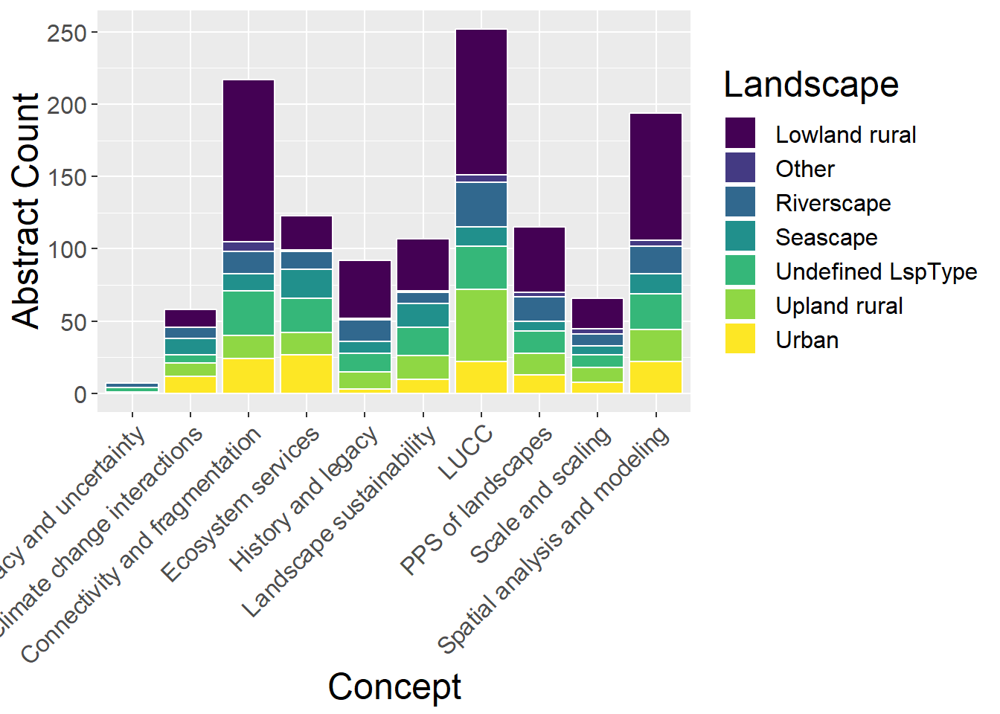
ggplot(lspCounts, aes(x=Concept, y=prop, fill=Type)) +
geom_bar(stat="identity", colour="white") +
theme(axis.text.x = element_text(angle = 45, hjust = 1)) +
scale_fill_viridis(discrete = TRUE) +
labs(fill="Landscape", y = "Proportion", x="Concept")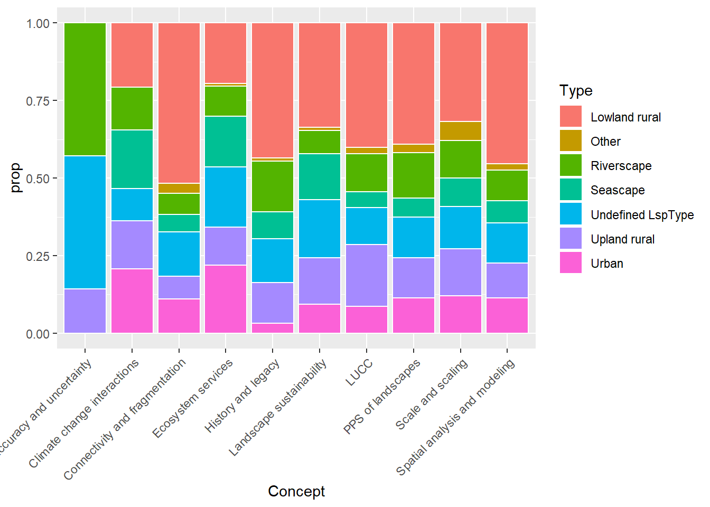
9.3.2 Without ‘Undefined LspType’ and ‘Other’ landscape types
General observations:
- Patterns seen above more obvious
lspCounts <- conceptdata %>%
select(Concept,`Upland rural`, `Lowland rural`, Urban, Riverscape, Seascape) %>%
mutate(sum = rowSums(.[2:6])) %>% #calculate total for subsquent calcultation of proportion
gather(key = Type, value = count, -Concept, -sum) %>%
mutate(prop = count / sum) #calculate proportion
conceptdata %>%
select(Concept,`Upland rural`, `Lowland rural`, Urban, Riverscape, Seascape) %>%
mutate(Total = rowSums(.[2:6])) %>% #calculate total
mutate_if(is.numeric, funs(prop = ./ Total)) %>%
mutate_at(vars(ends_with("prop")), round, 3) %>%
select(-Total_prop) %>%
kable() %>%
kable_styling() %>%
scroll_box(width = "100%")| Concept | Upland rural | Lowland rural | Urban | Riverscape | Seascape | Total | Upland rural_prop | Lowland rural_prop | Urban_prop | Riverscape_prop | Seascape_prop |
|---|---|---|---|---|---|---|---|---|---|---|---|
| Accuracy and uncertainty | 1 | 0 | 0 | 3 | 0 | 4 | 0.250 | 0.000 | 0.000 | 0.750 | 0.000 |
| Climate change interactions | 9 | 12 | 12 | 8 | 11 | 52 | 0.173 | 0.231 | 0.231 | 0.154 | 0.212 |
| Connectivity and fragmentation | 16 | 112 | 24 | 15 | 12 | 179 | 0.089 | 0.626 | 0.134 | 0.084 | 0.067 |
| Ecosystem services | 15 | 24 | 27 | 12 | 20 | 98 | 0.153 | 0.245 | 0.276 | 0.122 | 0.204 |
| History and legacy | 18 | 47 | 3 | 16 | 9 | 93 | 0.194 | 0.505 | 0.032 | 0.172 | 0.097 |
| Landscape sustainability | 19 | 41 | 10 | 9 | 17 | 96 | 0.198 | 0.427 | 0.104 | 0.094 | 0.177 |
| LUCC | 56 | 109 | 22 | 32 | 14 | 233 | 0.240 | 0.468 | 0.094 | 0.137 | 0.060 |
| PPS of landscapes | 15 | 45 | 13 | 17 | 7 | 97 | 0.155 | 0.464 | 0.134 | 0.175 | 0.072 |
| Scale and scaling | 10 | 21 | 8 | 8 | 6 | 53 | 0.189 | 0.396 | 0.151 | 0.151 | 0.113 |
| Spatial analysis and modeling | 22 | 88 | 22 | 19 | 14 | 165 | 0.133 | 0.533 | 0.133 | 0.115 | 0.085 |
ggplot(lspCounts, aes(x=Concept, y=count, fill=Type)) +
geom_bar(stat="identity", colour="white") +
theme(axis.text.x = element_text(angle = 45, hjust = 1)) +
scale_fill_viridis(discrete = TRUE) +
labs(fill="Landscape", y = "Abstract Count", x="Concept")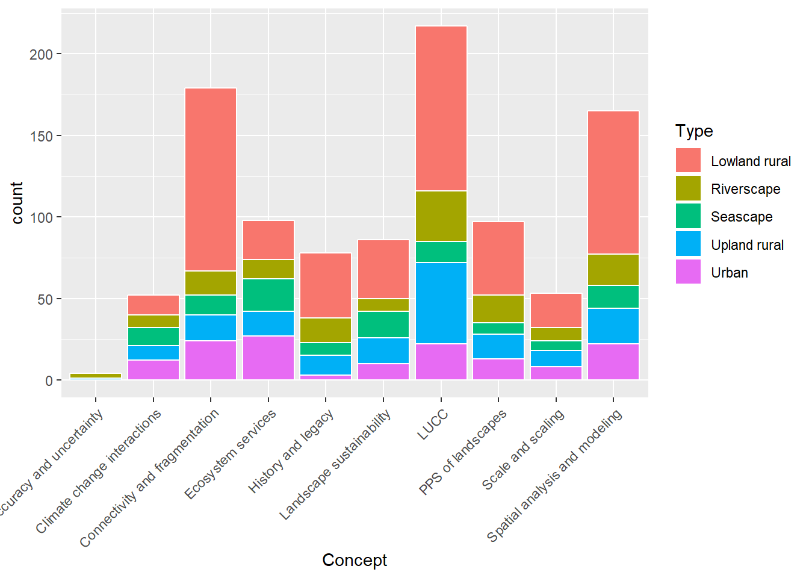
ggplot(lspCounts, aes(x=Concept, y=prop, fill=Type)) +
geom_bar(stat="identity", colour="white") +
theme(axis.text.x = element_text(angle = 45, hjust = 1)) +
scale_fill_viridis(discrete = TRUE) +
labs(fill="Landscape", y = "Proportion", x="Concept")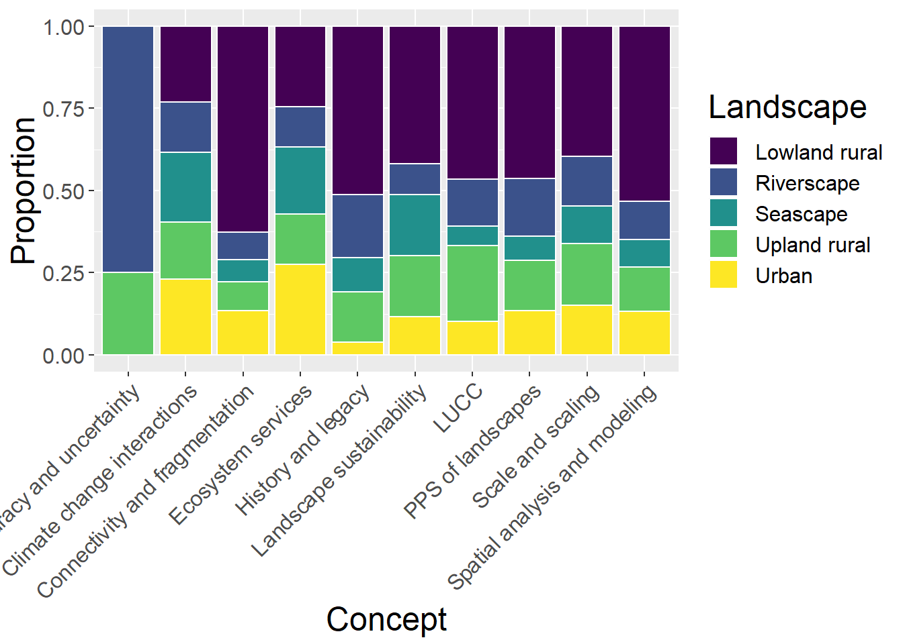
9.4 Organism
General observations
- Ecosystem services have greatest proportion of humans (31%)
speciesCounts <- conceptdata %>%
select(Concept, Mammals, Humans, Birds, Reptiles, Inverts, Plants, Amphibians, Fish, `Generic Habitat`,`Woodland Forests`) %>%
mutate(sum = rowSums(.[2:11])) %>% #calculate total for subsquent calcultation of proportion
gather(key = Type, value = count, -Concept, -sum) %>%
mutate(prop = count / sum) #calculate proportion
conceptdata %>%
select(Concept, Mammals, Humans, Birds, Reptiles, Inverts, Plants, Amphibians, Fish, `Generic Habitat`,`Woodland Forests`) %>%
mutate(Total = rowSums(.[2:11])) %>% #calculate total for subsquent calcultation of proportion
mutate_if(is.numeric, funs(prop = ./ Total)) %>%
mutate_at(vars(ends_with("prop")), round, 3) %>%
select(-Total_prop) %>%
kable() %>%
kable_styling() %>%
scroll_box(width = "100%")| Concept | Mammals | Humans | Birds | Reptiles | Inverts | Plants | Amphibians | Fish | Generic Habitat | Woodland Forests | Total | Mammals_prop | Humans_prop | Birds_prop | Reptiles_prop | Inverts_prop | Plants_prop | Amphibians_prop | Fish_prop | Generic Habitat_prop | Woodland Forests_prop |
|---|---|---|---|---|---|---|---|---|---|---|---|---|---|---|---|---|---|---|---|---|---|
| Accuracy and uncertainty | 0 | 0 | 0 | 0 | 0 | 2 | 0 | 0 | 3 | 1 | 6 | 0.000 | 0.000 | 0.000 | 0.000 | 0.000 | 0.333 | 0.000 | 0.000 | 0.500 | 0.167 |
| Climate change interactions | 2 | 12 | 2 | 1 | 2 | 7 | 0 | 1 | 13 | 10 | 50 | 0.040 | 0.240 | 0.040 | 0.020 | 0.040 | 0.140 | 0.000 | 0.020 | 0.260 | 0.200 |
| Connectivity and fragmentation | 19 | 4 | 40 | 1 | 37 | 25 | 4 | 3 | 53 | 57 | 243 | 0.078 | 0.016 | 0.165 | 0.004 | 0.152 | 0.103 | 0.016 | 0.012 | 0.218 | 0.235 |
| Ecosystem services | 1 | 29 | 5 | 1 | 6 | 6 | 0 | 2 | 28 | 15 | 93 | 0.011 | 0.312 | 0.054 | 0.011 | 0.065 | 0.065 | 0.000 | 0.022 | 0.301 | 0.161 |
| History and legacy | 4 | 19 | 9 | 1 | 7 | 15 | 1 | 1 | 42 | 25 | 124 | 0.032 | 0.153 | 0.073 | 0.008 | 0.056 | 0.121 | 0.008 | 0.008 | 0.339 | 0.202 |
| Landscape sustainability | 2 | 26 | 10 | 1 | 3 | 7 | 0 | 1 | 20 | 20 | 90 | 0.022 | 0.289 | 0.111 | 0.011 | 0.033 | 0.078 | 0.000 | 0.011 | 0.222 | 0.222 |
| LUCC | 6 | 29 | 27 | 3 | 15 | 35 | 4 | 2 | 92 | 52 | 265 | 0.023 | 0.109 | 0.102 | 0.011 | 0.057 | 0.132 | 0.015 | 0.008 | 0.347 | 0.196 |
| PPS of landscapes | 7 | 4 | 24 | 1 | 31 | 21 | 1 | 5 | 34 | 16 | 144 | 0.049 | 0.028 | 0.167 | 0.007 | 0.215 | 0.146 | 0.007 | 0.035 | 0.236 | 0.111 |
| Scale and scaling | 6 | 5 | 16 | 0 | 12 | 5 | 0 | 1 | 17 | 9 | 71 | 0.085 | 0.070 | 0.225 | 0.000 | 0.169 | 0.070 | 0.000 | 0.014 | 0.239 | 0.127 |
| Spatial analysis and modeling | 10 | 11 | 39 | 0 | 27 | 21 | 1 | 0 | 56 | 40 | 205 | 0.049 | 0.054 | 0.190 | 0.000 | 0.132 | 0.102 | 0.005 | 0.000 | 0.273 | 0.195 |
ggplot(speciesCounts, aes(x=Concept, y=count, fill=Type)) +
geom_bar(stat="identity", colour="white") +
theme(axis.text.x = element_text(angle = 45, hjust = 1)) +
scale_fill_viridis(discrete = TRUE) +
labs(fill="Organism", y = "Abstract Count", x="Concept")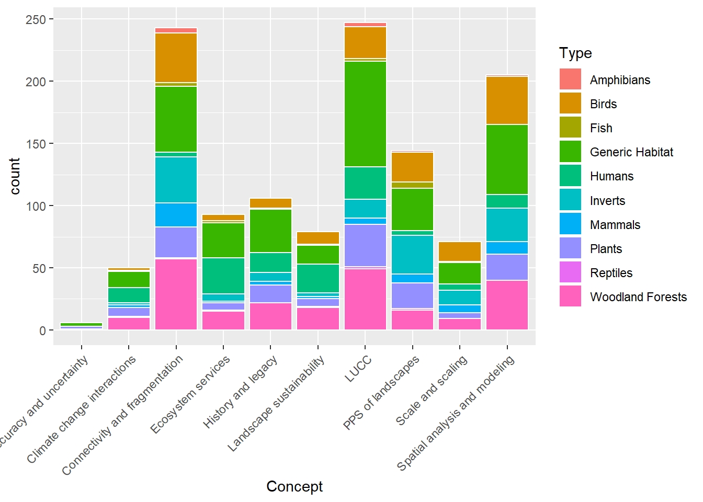
ggplot(speciesCounts, aes(x=Concept, y=prop, fill=Type)) +
geom_bar(stat="identity", colour="white") +
theme(axis.text.x = element_text(angle = 45, hjust = 1)) +
scale_fill_viridis(discrete = TRUE) +
labs(fill="Organism", y = "Proportion", x="Concept")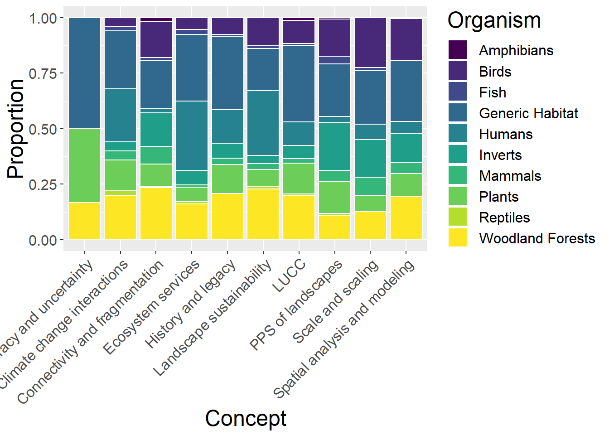
9.5 Methods
General observations:
- Ecosystem services has smallest proportion of Empirical studies
methodsCounts <- conceptdata %>%
select(Concept, Empirical, Theoretical, Qualitative, Quantitative, GIS, `Remote sensing`) %>%
mutate(sum = rowSums(.[2:7])) %>%
gather(key = Type, value = count, -Concept, -sum) %>%
mutate(prop = count / sum)
conceptdata %>%
select(Concept, Empirical, Theoretical, Qualitative, Quantitative, GIS, `Remote sensing`) %>%
mutate(Total = rowSums(.[2:7])) %>%
mutate_if(is.numeric, funs(prop = ./ Total)) %>%
mutate_at(vars(ends_with("prop")), round, 3) %>%
select(-Total_prop) %>%
kable() %>%
kable_styling() %>%
scroll_box(width = "100%")| Concept | Empirical | Theoretical | Qualitative | Quantitative | GIS | Remote sensing | Total | Empirical_prop | Theoretical_prop | Qualitative_prop | Quantitative_prop | GIS_prop | Remote sensing_prop |
|---|---|---|---|---|---|---|---|---|---|---|---|---|---|
| Accuracy and uncertainty | 2 | 2 | 0 | 5 | 0 | 0 | 9 | 0.222 | 0.222 | 0.000 | 0.556 | 0.000 | 0.000 |
| Climate change interactions | 10 | 16 | 13 | 21 | 14 | 2 | 76 | 0.132 | 0.211 | 0.171 | 0.276 | 0.184 | 0.026 |
| Connectivity and fragmentation | 113 | 43 | 18 | 92 | 55 | 10 | 331 | 0.341 | 0.130 | 0.054 | 0.278 | 0.166 | 0.030 |
| Ecosystem services | 14 | 38 | 36 | 43 | 30 | 4 | 165 | 0.085 | 0.230 | 0.218 | 0.261 | 0.182 | 0.024 |
| History and legacy | 41 | 21 | 30 | 38 | 18 | 6 | 154 | 0.266 | 0.136 | 0.195 | 0.247 | 0.117 | 0.039 |
| Landscape sustainability | 30 | 31 | 40 | 33 | 15 | 0 | 149 | 0.201 | 0.208 | 0.268 | 0.221 | 0.101 | 0.000 |
| LUCC | 98 | 47 | 53 | 107 | 66 | 18 | 389 | 0.252 | 0.121 | 0.136 | 0.275 | 0.170 | 0.046 |
| PPS of landscapes | 69 | 16 | 8 | 58 | 23 | 12 | 186 | 0.371 | 0.086 | 0.043 | 0.312 | 0.124 | 0.065 |
| Scale and scaling | 34 | 11 | 6 | 35 | 12 | 9 | 107 | 0.318 | 0.103 | 0.056 | 0.327 | 0.112 | 0.084 |
| Spatial analysis and modeling | 78 | 35 | 21 | 117 | 96 | 16 | 363 | 0.215 | 0.096 | 0.058 | 0.322 | 0.264 | 0.044 |
ggplot(methodsCounts, aes(x=Concept, y=count, fill=Type)) +
geom_bar(stat="identity", colour="white") +
theme(axis.text.x = element_text(angle = 45, hjust = 1)) +
scale_fill_viridis(discrete = TRUE) +
labs(fill="Method", y = "Abstract Count", x="Concept")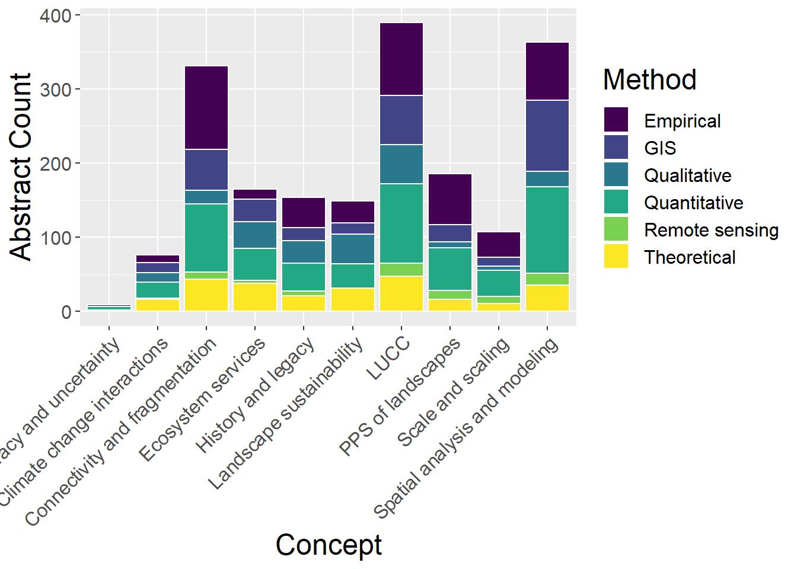
ggplot(methodsCounts, aes(x=Concept, y=prop, fill=Type)) +
geom_bar(stat="identity", colour="white") +
theme(axis.text.x = element_text(angle = 45, hjust = 1)) +
scale_fill_viridis(discrete = TRUE) +
labs(fill="Method", y = "Proportion", x="Concept")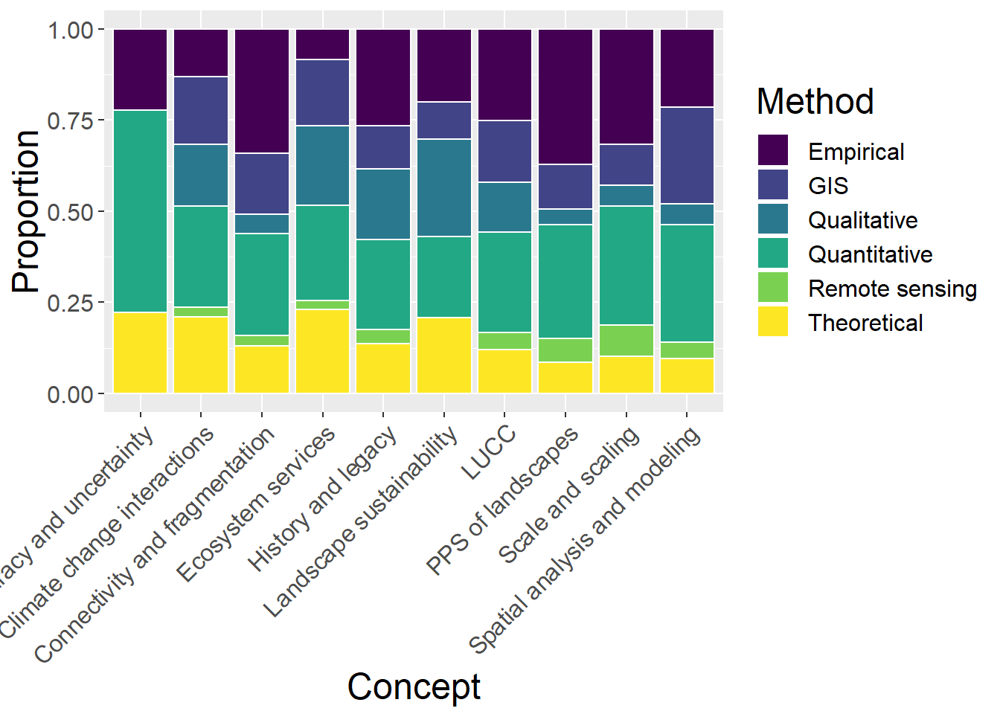
9.6 Spatial Extent
General observations:
- Ecosystem services has the largest proportion of global studies and fewest mini and micro studies
- Connectivity & Fragmentation has largest proportion of local studies
spatialCounts <- conceptdata %>%
select(Concept, Micro, Mini, Local, Regional, National, Continental, Global,`Undefined Extent`) %>%
mutate(sum = rowSums(.[2:9])) %>%
gather(key = Type, value = count, -Concept, -sum) %>%
mutate(prop = count / sum)
conceptdata %>%
select(Concept, Micro, Mini, Local, Regional, National, Continental, Global,`Undefined Extent`) %>%
mutate(Total = rowSums(.[2:9])) %>%
mutate_if(is.numeric, funs(prop = ./ Total)) %>%
mutate_at(vars(ends_with("prop")), round, 3) %>%
select(-Total_prop) %>%
kable() %>%
kable_styling() %>%
scroll_box(width = "100%")| Concept | Micro | Mini | Local | Regional | National | Continental | Global | Undefined Extent | Total | Micro_prop | Mini_prop | Local_prop | Regional_prop | National_prop | Continental_prop | Global_prop | Undefined Extent_prop |
|---|---|---|---|---|---|---|---|---|---|---|---|---|---|---|---|---|---|
| Accuracy and uncertainty | 0 | 1 | 2 | 1 | 2 | 0 | 0 | 1 | 7 | 0.000 | 0.143 | 0.286 | 0.143 | 0.286 | 0.000 | 0.000 | 0.143 |
| Climate change interactions | 0 | 4 | 15 | 15 | 8 | 1 | 2 | 5 | 50 | 0.000 | 0.080 | 0.300 | 0.300 | 0.160 | 0.020 | 0.040 | 0.100 |
| Connectivity and fragmentation | 7 | 25 | 71 | 48 | 25 | 4 | 2 | 30 | 212 | 0.033 | 0.118 | 0.335 | 0.226 | 0.118 | 0.019 | 0.009 | 0.142 |
| Ecosystem services | 1 | 6 | 33 | 22 | 25 | 5 | 6 | 22 | 120 | 0.008 | 0.050 | 0.275 | 0.183 | 0.208 | 0.042 | 0.050 | 0.183 |
| History and legacy | 0 | 8 | 25 | 30 | 22 | 5 | 2 | 5 | 97 | 0.000 | 0.082 | 0.258 | 0.309 | 0.227 | 0.052 | 0.021 | 0.052 |
| Landscape sustainability | 0 | 7 | 27 | 27 | 21 | 6 | 2 | 13 | 103 | 0.000 | 0.068 | 0.262 | 0.262 | 0.204 | 0.058 | 0.019 | 0.126 |
| LUCC | 7 | 20 | 73 | 62 | 59 | 13 | 3 | 15 | 252 | 0.028 | 0.079 | 0.290 | 0.246 | 0.234 | 0.052 | 0.012 | 0.060 |
| PPS of landscapes | 11 | 20 | 33 | 19 | 12 | 1 | 2 | 16 | 114 | 0.096 | 0.175 | 0.289 | 0.167 | 0.105 | 0.009 | 0.018 | 0.140 |
| Scale and scaling | 6 | 12 | 18 | 10 | 8 | 2 | 1 | 9 | 66 | 0.091 | 0.182 | 0.273 | 0.152 | 0.121 | 0.030 | 0.015 | 0.136 |
| Spatial analysis and modeling | 7 | 16 | 67 | 58 | 31 | 7 | 1 | 21 | 208 | 0.034 | 0.077 | 0.322 | 0.279 | 0.149 | 0.034 | 0.005 | 0.101 |
factor_order <- c('Micro', 'Mini', 'Local', 'Regional', 'National', 'Continental', 'Global','Undefined Extent')
factor_labels <- c('Micro', 'Mini', 'Local', 'Regional', 'National', 'Continental', 'Global','Undefined')
ggplot(spatialCounts, aes(x=Concept, y=count, fill=factor(Type, level=factor_order))) +
geom_bar(stat="identity", colour="white") +
theme(axis.text.x = element_text(angle = 45, hjust = 1)) +
scale_fill_viridis(discrete = TRUE) +
labs(fill="Spatial", y = "Abstract Count", x="Concept")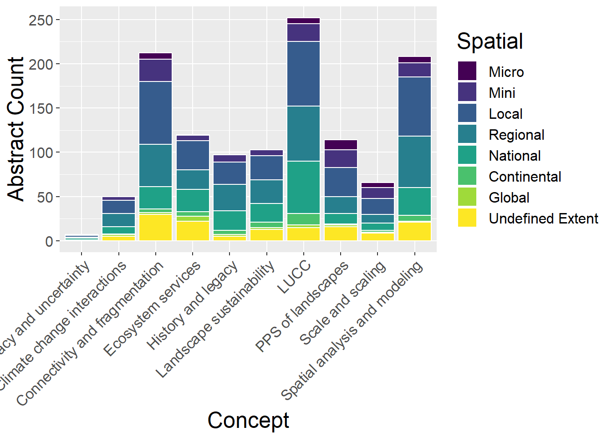
ggplot(spatialCounts, aes(x=Concept, y=prop, fill=factor(Type, level=factor_order))) +
geom_bar(stat="identity", colour="white") +
theme(axis.text.x = element_text(angle = 45, hjust = 1)) +
scale_fill_viridis(discrete = TRUE) +
labs(fill="Spatial", y = "Proportion", x="Concept")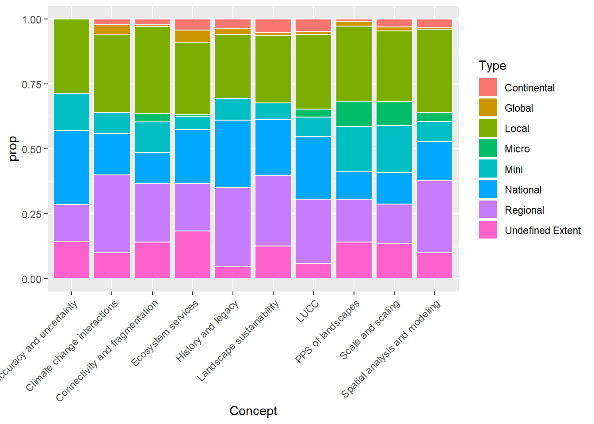
9.7 Temporal Extent
9.7.1 With undefined
General observations:
| Concept | Hours | Days | Weeks | Months | Years | Decades | Centuries | Longer | Undefined Temporal | Total | Hours_prop | Days_prop | Weeks_prop | Months_prop | Years_prop | Decades_prop | Centuries_prop | Longer_prop | Undefined Temporal_prop |
|---|---|---|---|---|---|---|---|---|---|---|---|---|---|---|---|---|---|---|---|
| Accuracy and uncertainty | 0 | 0 | 0 | 0 | 1 | 4 | 1 | 0 | 2 | 8 | 0 | 0.000 | 0.000 | 0.000 | 0.125 | 0.500 | 0.125 | 0.000 | 0.250 |
| Climate change interactions | 0 | 0 | 0 | 1 | 4 | 11 | 5 | 1 | 22 | 44 | 0 | 0.000 | 0.000 | 0.023 | 0.091 | 0.250 | 0.114 | 0.023 | 0.500 |
| Connectivity and fragmentation | 0 | 0 | 1 | 9 | 15 | 30 | 7 | 0 | 129 | 191 | 0 | 0.000 | 0.005 | 0.047 | 0.079 | 0.157 | 0.037 | 0.000 | 0.675 |
| Ecosystem services | 0 | 0 | 0 | 1 | 12 | 25 | 3 | 0 | 65 | 106 | 0 | 0.000 | 0.000 | 0.009 | 0.113 | 0.236 | 0.028 | 0.000 | 0.613 |
| History and legacy | 0 | 0 | 0 | 2 | 11 | 22 | 15 | 5 | 38 | 93 | 0 | 0.000 | 0.000 | 0.022 | 0.118 | 0.237 | 0.161 | 0.054 | 0.409 |
| Landscape sustainability | 0 | 1 | 0 | 3 | 6 | 21 | 0 | 0 | 51 | 82 | 0 | 0.012 | 0.000 | 0.037 | 0.073 | 0.256 | 0.000 | 0.000 | 0.622 |
| LUCC | 0 | 0 | 0 | 6 | 34 | 75 | 13 | 5 | 88 | 221 | 0 | 0.000 | 0.000 | 0.027 | 0.154 | 0.339 | 0.059 | 0.023 | 0.398 |
| PPS of landscapes | 0 | 0 | 2 | 4 | 12 | 17 | 3 | 2 | 61 | 101 | 0 | 0.000 | 0.020 | 0.040 | 0.119 | 0.168 | 0.030 | 0.020 | 0.604 |
| Scale and scaling | 0 | 0 | 1 | 2 | 5 | 12 | 2 | 1 | 36 | 59 | 0 | 0.000 | 0.017 | 0.034 | 0.085 | 0.203 | 0.034 | 0.017 | 0.610 |
| Spatial analysis and modeling | 0 | 0 | 1 | 6 | 18 | 28 | 5 | 1 | 114 | 173 | 0 | 0.000 | 0.006 | 0.035 | 0.104 | 0.162 | 0.029 | 0.006 | 0.659 |
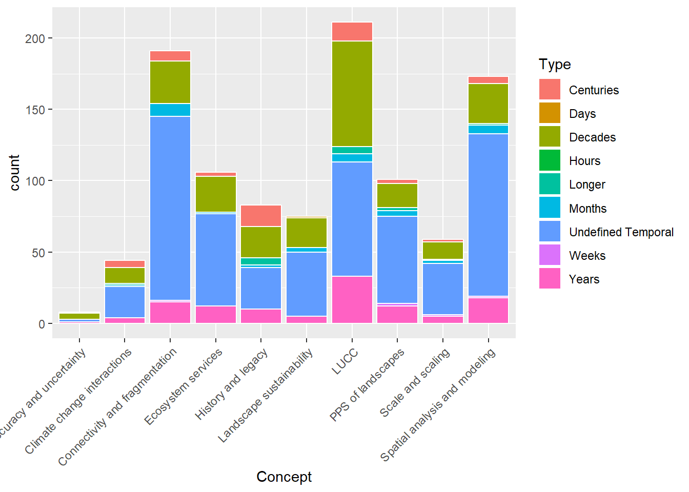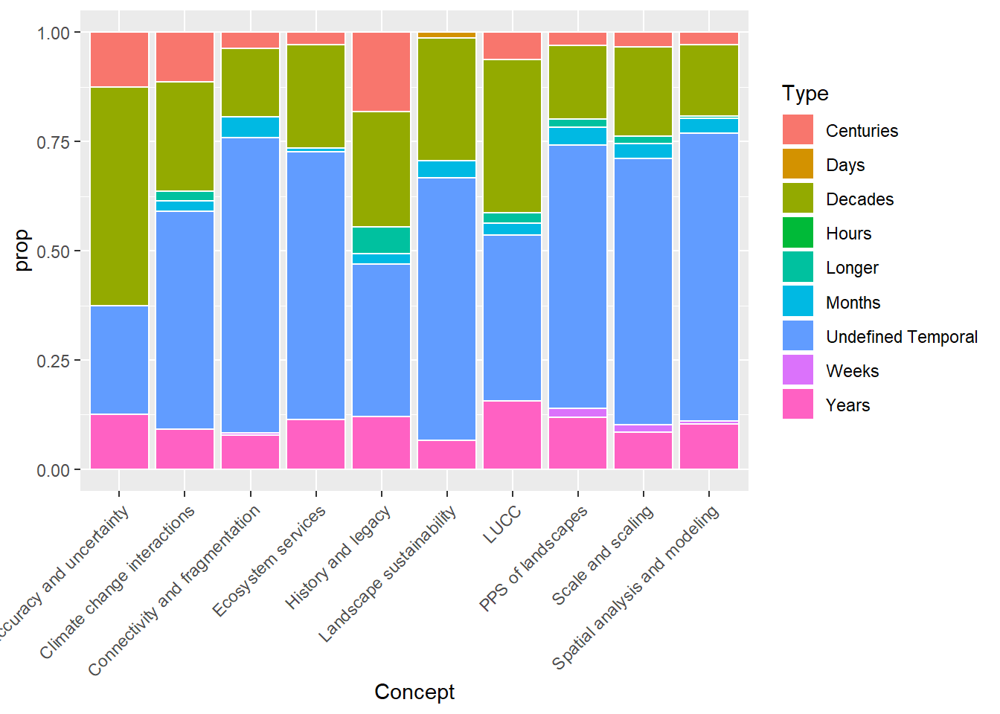
9.7.2 Without Undefined
- History and Legacy studies have greatest proportion of Centries and Longer studies
| Concept | Hours | Days | Weeks | Months | Years | Decades | Centuries | Longer | Total | Hours_prop | Days_prop | Weeks_prop | Months_prop | Years_prop | Decades_prop | Centuries_prop | Longer_prop |
|---|---|---|---|---|---|---|---|---|---|---|---|---|---|---|---|---|---|
| Accuracy and uncertainty | 0 | 0 | 0 | 0 | 1 | 4 | 1 | 0 | 6 | 0 | 0.000 | 0.000 | 0.000 | 0.167 | 0.667 | 0.167 | 0.000 |
| Climate change interactions | 0 | 0 | 0 | 1 | 4 | 11 | 5 | 1 | 22 | 0 | 0.000 | 0.000 | 0.045 | 0.182 | 0.500 | 0.227 | 0.045 |
| Connectivity and fragmentation | 0 | 0 | 1 | 9 | 15 | 30 | 7 | 0 | 62 | 0 | 0.000 | 0.016 | 0.145 | 0.242 | 0.484 | 0.113 | 0.000 |
| Ecosystem services | 0 | 0 | 0 | 1 | 12 | 25 | 3 | 0 | 41 | 0 | 0.000 | 0.000 | 0.024 | 0.293 | 0.610 | 0.073 | 0.000 |
| History and legacy | 0 | 0 | 0 | 2 | 11 | 22 | 15 | 5 | 55 | 0 | 0.000 | 0.000 | 0.036 | 0.200 | 0.400 | 0.273 | 0.091 |
| Landscape sustainability | 0 | 1 | 0 | 3 | 6 | 21 | 0 | 0 | 31 | 0 | 0.032 | 0.000 | 0.097 | 0.194 | 0.677 | 0.000 | 0.000 |
| LUCC | 0 | 0 | 0 | 6 | 34 | 75 | 13 | 5 | 133 | 0 | 0.000 | 0.000 | 0.045 | 0.256 | 0.564 | 0.098 | 0.038 |
| PPS of landscapes | 0 | 0 | 2 | 4 | 12 | 17 | 3 | 2 | 40 | 0 | 0.000 | 0.050 | 0.100 | 0.300 | 0.425 | 0.075 | 0.050 |
| Scale and scaling | 0 | 0 | 1 | 2 | 5 | 12 | 2 | 1 | 23 | 0 | 0.000 | 0.043 | 0.087 | 0.217 | 0.522 | 0.087 | 0.043 |
| Spatial analysis and modeling | 0 | 0 | 1 | 6 | 18 | 28 | 5 | 1 | 59 | 0 | 0.000 | 0.017 | 0.102 | 0.305 | 0.475 | 0.085 | 0.017 |
 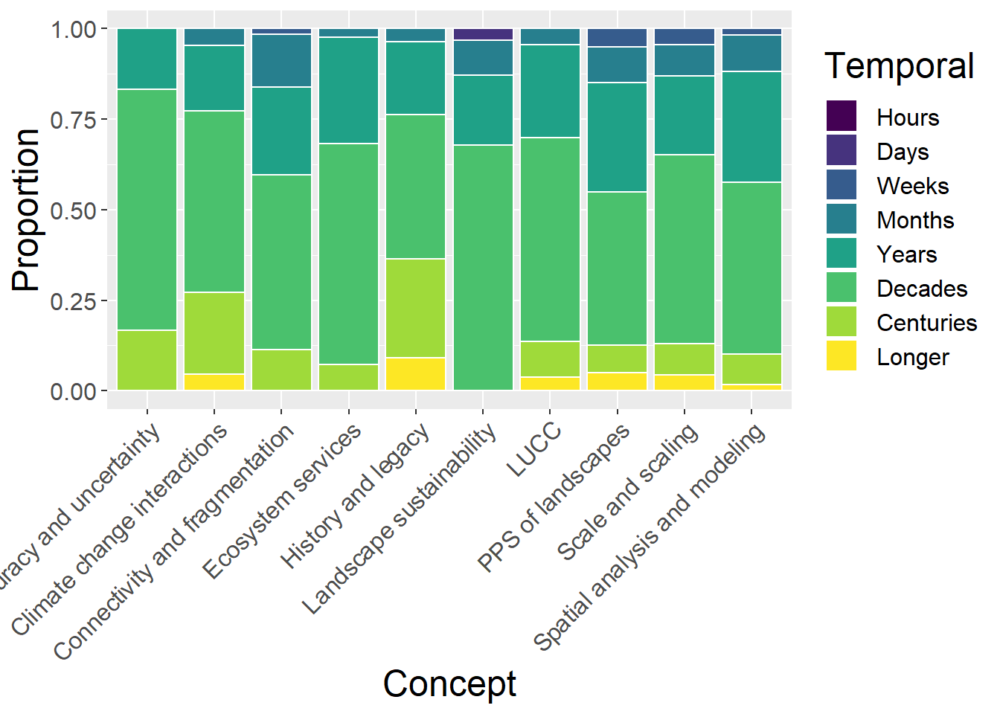
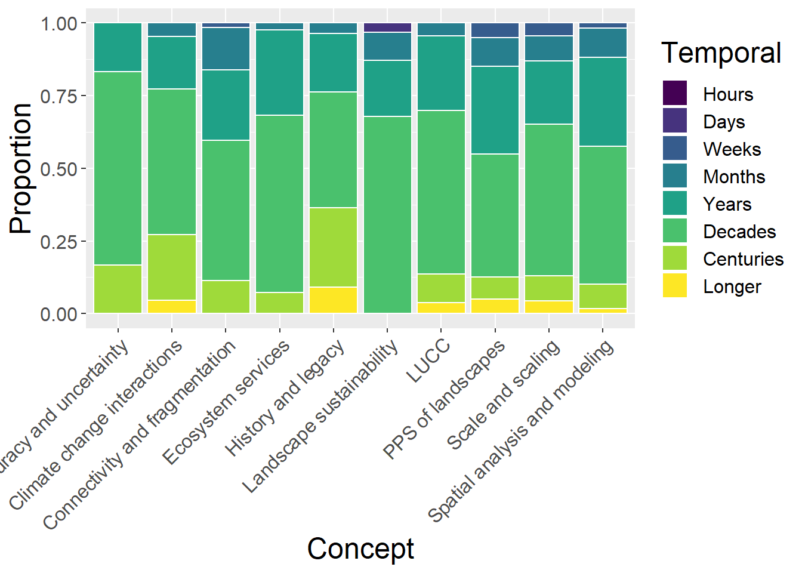
9.8 Other Concepts
General observations:
- Connectivity & Fragmentation and pattern-process-scale have greatest proportion of biodiversity studies
- History and Legacy have greatest proportion of cultural studies
otherCounts <- conceptdata %>%
select(Concept, `Green Infrastructure`,`Planning and Architecture`,`Management and Conservation`,`Cultural Landscapes`,`Socio-economic Dimensions`,Biodiversity,`Landscape Assessment`,`Catchment Based Approach`,`Invasives Pests Diseases`
) %>%
mutate(sum = rowSums(.[2:10])) %>%
gather(key = Type, value = count, -Concept, -sum) %>%
mutate(prop = count / sum)
conceptdata %>%
select(Concept, `Green Infrastructure`,`Planning and Architecture`,`Management and Conservation`,`Cultural Landscapes`,`Socio-economic Dimensions`,Biodiversity,`Landscape Assessment`,`Catchment Based Approach`,`Invasives Pests Diseases`
) %>%
mutate(Total = rowSums(.[2:10])) %>%
mutate_if(is.numeric, funs(prop = ./ Total)) %>%
mutate_at(vars(ends_with("prop")), round, 3) %>%
select(-Total_prop) %>%
kable() %>%
kable_styling() %>%
scroll_box(width = "100%")| Concept | Green Infrastructure | Planning and Architecture | Management and Conservation | Cultural Landscapes | Socio-economic Dimensions | Biodiversity | Landscape Assessment | Catchment Based Approach | Invasives Pests Diseases | Total | Green Infrastructure_prop | Planning and Architecture_prop | Management and Conservation_prop | Cultural Landscapes_prop | Socio-economic Dimensions_prop | Biodiversity_prop | Landscape Assessment_prop | Catchment Based Approach_prop | Invasives Pests Diseases_prop |
|---|---|---|---|---|---|---|---|---|---|---|---|---|---|---|---|---|---|---|---|
| Accuracy and uncertainty | 0 | 1 | 1 | 1 | 2 | 0 | 2 | 1 | 1 | 9 | 0.000 | 0.111 | 0.111 | 0.111 | 0.222 | 0.000 | 0.222 | 0.111 | 0.111 |
| Climate change interactions | 7 | 14 | 20 | 10 | 16 | 15 | 1 | 5 | 0 | 88 | 0.080 | 0.159 | 0.227 | 0.114 | 0.182 | 0.170 | 0.011 | 0.057 | 0.000 |
| Connectivity and fragmentation | 10 | 30 | 97 | 11 | 13 | 104 | 5 | 2 | 2 | 274 | 0.036 | 0.109 | 0.354 | 0.040 | 0.047 | 0.380 | 0.018 | 0.007 | 0.007 |
| Ecosystem services | 20 | 27 | 49 | 28 | 56 | 35 | 11 | 5 | 0 | 231 | 0.087 | 0.117 | 0.212 | 0.121 | 0.242 | 0.152 | 0.048 | 0.022 | 0.000 |
| History and legacy | 3 | 10 | 51 | 39 | 26 | 34 | 11 | 5 | 0 | 179 | 0.017 | 0.056 | 0.285 | 0.218 | 0.145 | 0.190 | 0.061 | 0.028 | 0.000 |
| Landscape sustainability | 10 | 34 | 52 | 28 | 34 | 30 | 11 | 2 | 2 | 203 | 0.049 | 0.167 | 0.256 | 0.138 | 0.167 | 0.148 | 0.054 | 0.010 | 0.010 |
| LUCC | 9 | 27 | 104 | 46 | 54 | 71 | 21 | 9 | 3 | 344 | 0.026 | 0.078 | 0.302 | 0.134 | 0.157 | 0.206 | 0.061 | 0.026 | 0.009 |
| PPS of landscapes | 10 | 8 | 44 | 2 | 10 | 59 | 6 | 3 | 1 | 143 | 0.070 | 0.056 | 0.308 | 0.014 | 0.070 | 0.413 | 0.042 | 0.021 | 0.007 |
| Scale and scaling | 3 | 6 | 18 | 2 | 7 | 24 | 4 | 1 | 1 | 66 | 0.045 | 0.091 | 0.273 | 0.030 | 0.106 | 0.364 | 0.061 | 0.015 | 0.015 |
| Spatial analysis and modeling | 14 | 32 | 75 | 17 | 21 | 77 | 20 | 8 | 3 | 267 | 0.052 | 0.120 | 0.281 | 0.064 | 0.079 | 0.288 | 0.075 | 0.030 | 0.011 |
ggplot(otherCounts, aes(x=Concept, y=count, fill=Type)) +
geom_bar(stat="identity", colour="white") +
theme(axis.text.x = element_text(angle = 45, hjust = 1)) +
scale_fill_viridis(discrete = TRUE) +
labs(fill="Other Concept", y = "Abstract Count", x="Concept")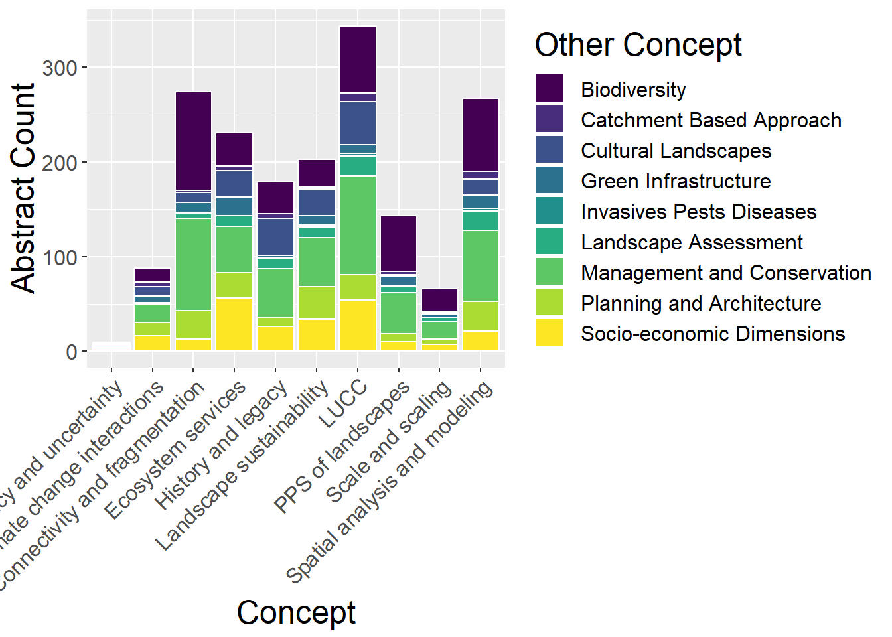
ggplot(otherCounts, aes(x=Concept, y=prop, fill=Type)) +
geom_bar(stat="identity", colour="white") +
theme(axis.text.x = element_text(angle = 45, hjust = 1)) +
scale_fill_viridis(discrete = TRUE) +
labs(fill="Other Concept", y = "Proportion", x="Concept")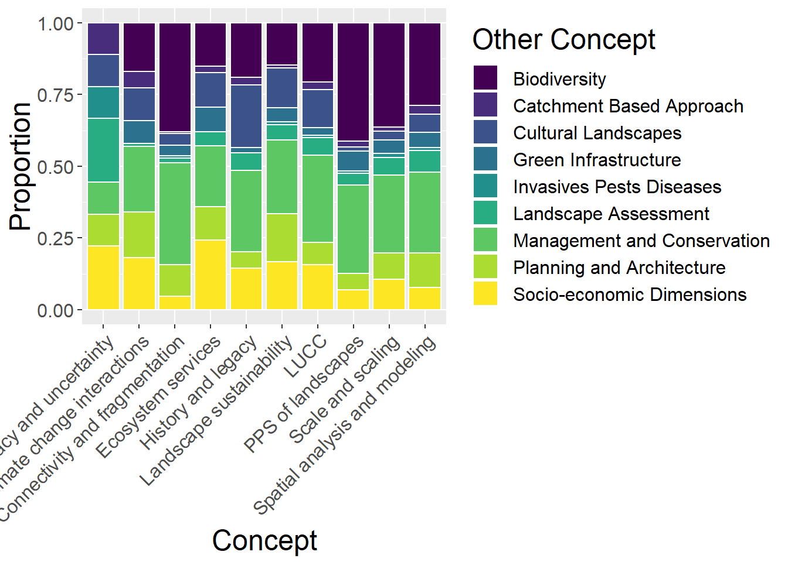